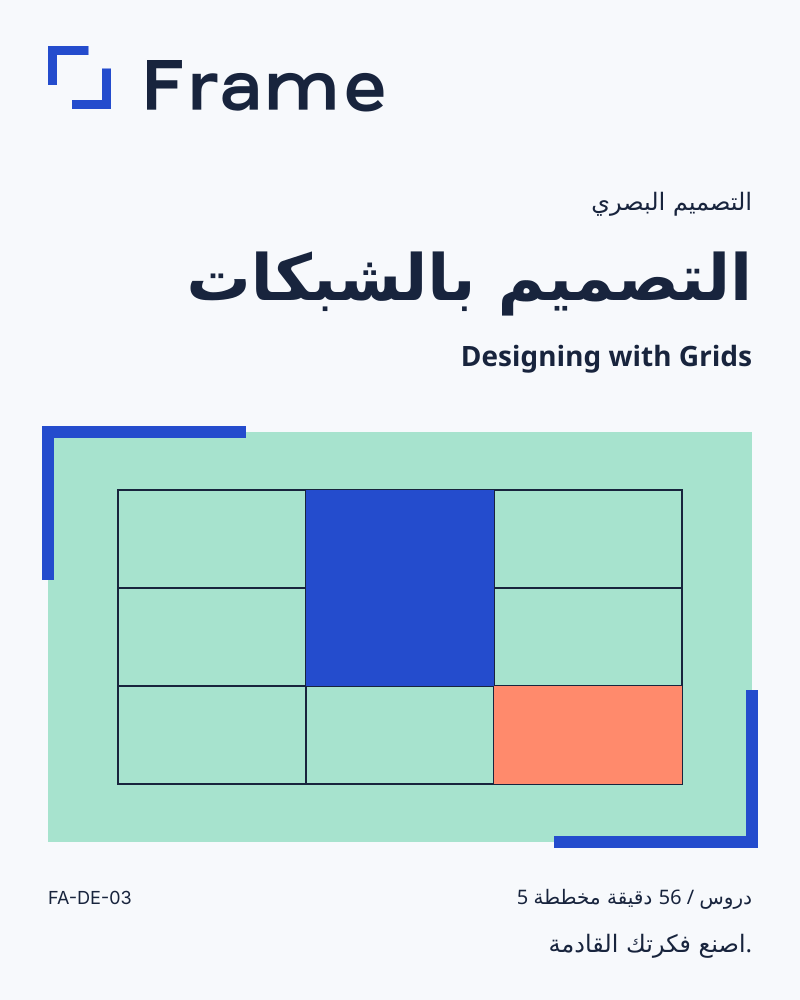

التصميم بالشبكات
Designing with Grids
كراسة ممارسة
خمس مساحات عمل للتجربة والملاحظة. هذه تمارين مؤلّفة للكراسة، وليست فيديوهات مكتملة أو أسماء دروس معتمدة.
اكتشف بنية الصفحة
جرّب التمرين
ارسم عمودين على صفحة. ضع عنوانًا وفقرة قصيرة.
ما الذي تغيّر؟
قراري القادم
استخدم المحاذاة
جرّب التمرين
حاذِ عنوانًا وفقرة وصورة على حافة مشتركة واحدة.
ما الذي تغيّر؟
قراري القادم
حدّد هرمية الخط
جرّب التمرين
نسّق عنوانًا وعنوانًا فرعيًا وفقرة. امنح كل عنصر دورًا واضحًا.
ما الذي تغيّر؟
قراري القادم
دع المساحة تنظّم
جرّب التمرين
قارن التخطيط نفسه بمسافات صغيرة وواسعة. اشرح أيّهما أوضح للقراءة.
ما الذي تغيّر؟
قراري القادم
اصنع صفحة مفيدة
جرّب التمرين
اجمع الشبكة والهرمية والمسافات في صفحة واحدة لمعلومات فعالية.